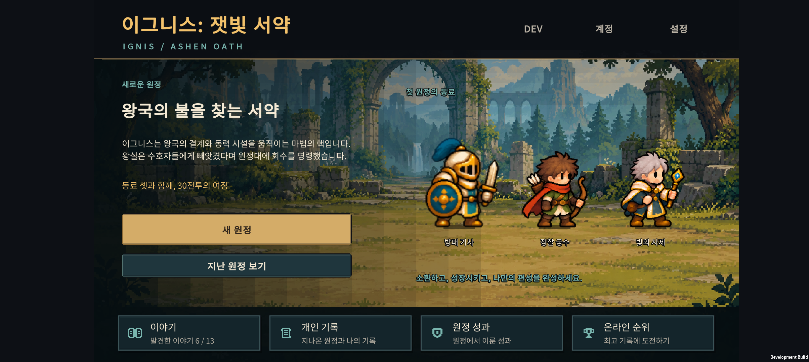
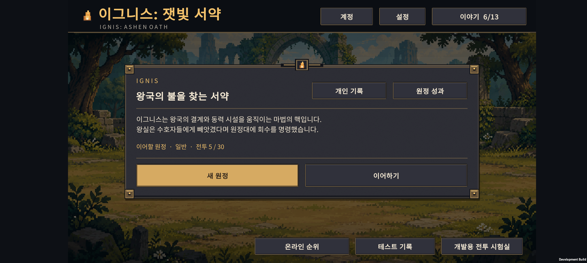
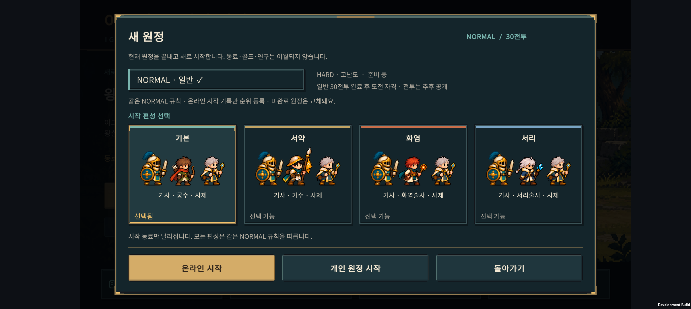
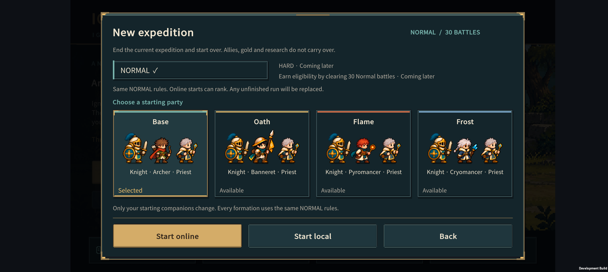
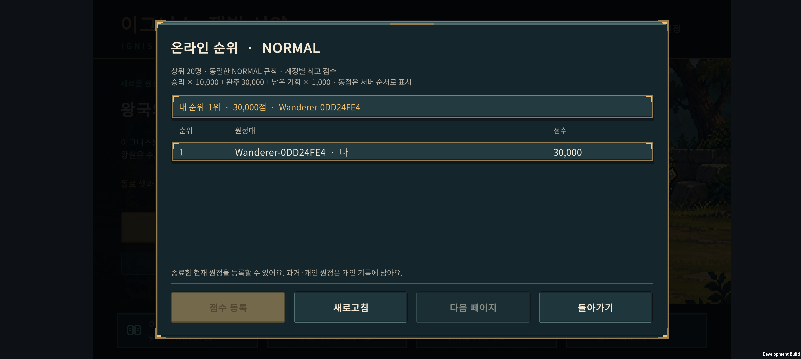
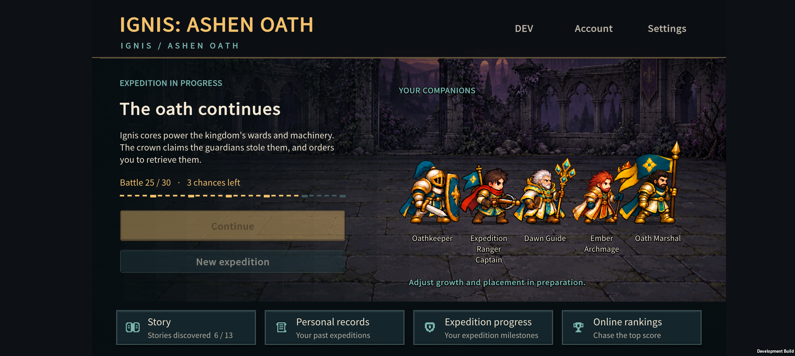

IGNIS / ASHEN OATH · v0.74
동료가 보이는 메뉴
설명창으로 가려졌던 홈에서 원정대가 먼저 보이도록 바꿨다. 어두운 청록과 차분한 금속을 공통 재질로 사용하고, 금색은 중요한 행동과 선택에 집중한다.
2026-11-07 · Unity 실제 적용 · Buddy2 화면
원정의 다음 행동이 보이는 홈
왼쪽에는 현재 진행과 이어하기, 오른쪽에는 실제 출전 동료. 지역에 맞는 기존 배경과 사람 기준 크기 보정을 함께 사용한다. 동료 이름과 설명의 사각 배경은 없애고 얇은 글자 외곽선과 그림자로 가독성을 확보했다.

이전 홈과 비교

이름 대신 모습으로 고르는 시작 편성
네 편성에 포함된 유닛 세 명을 보여준다. 모든 편성의 NORMAL 규칙은 같고, 선택 여부는 색과 문구로 함께 표시한다.


공통 창과 행동 버튼
일반 정보 패널의 금색 테두리를 줄이고, 주요 행동에는 황동색을 남겼다. 큰 모서리 장식을 줄이고 메뉴마다 읽을 거리와 조작 영역을 분리한다.

검증과 범위Buddy2에 최종 APK 설치 완료. 한국어·영어 메뉴 26화면을 검사했고 글자 넘침은 0건이었다. 편성 선택·취소와 한영 전환을 실제 터치로 확인했다. 밝은 숲과 어두운 지역 모두 이름표의 사각 배경 없이 표시된다. Unity 빌드, 순위 20항목·계정 32항목·문구 검사 5,015항목을 통과했다.
검사 편성은 저장을 차단한 상태에서 표시한 뒤 원래 원정과 언어로 복원했다. 이번 검사는 전체 전투나 모든 화면비를 대상으로 한 결과는 아니다.
전투·성장·연구 수치와 저장/온라인 순위 규칙은 유지한다. 결합 화면의 정보 재배치와 연구·순위 고유 디자인은 후속 작업이다.
이전 온라인 순위 작업 v0.73의 기준 커밋은 dd78402다.
어두운 지역과 긴 영어 이름 확인

저장을 차단한 검사 편성이다. 실제 원정 진행 상황이 아니다.
변경 내용·검증 기록